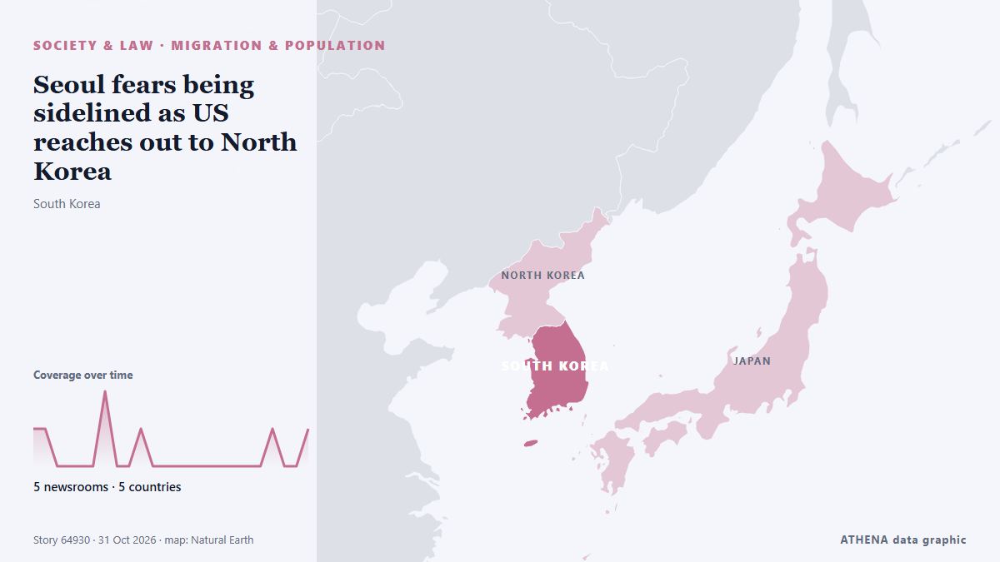

Migración y población
| 18 oct | 0 |
|---|---|
| 19 oct | 0 |
| 20 oct | 0 |
| 21 oct | 0 |
| 22 oct | 0 |
| 23 oct | 1 |
| 24 oct | 1 |
| 25 oct | 1 |
| 26 oct | 2 |
| 27 oct | 3 |
| 28 oct | 1 |
| 29 oct | 3 |
| 30 oct | 4 |
| 31 oct | 0 |
Los titulares se muestran en inglés, tal como se publicaron.

Seoul fears being sidelined as US reaches out to North Korea
With ties between South Korea and the Trump administration strained, the South Korean government worries that Donald Trump's pursuit of a diplomatic breakthrough with Kim Jong Un may come at Seoul's… de DW English
Brunson's call for year-round drills short on details
Seoul’s military says it will maintain its two major annual exercises with Washington while continuing joint training throughout the year, following a call by the top U.S. commander in South Korea… de The Korea Times
Details of thousands of US immigration agents leaked in major hack
A group called the Department of Peace released information on more than 41,000 DHS staff. de BBC News
China’s families are now supporting more old people than kids
The latest figures mark a major milestone as Beijing grapples with an ageing population. de BBC Business
US rejects record 1 in 4 South Korean visitor visa applicants, over four times Japan's rate
The U.S. turned down nearly 1 in 4 South Korean applicants for business and tourist visas in the year to September 2025, a record high and more than four times the rate for Japanese applicants. de VnExpress International
Malaysia officers detain couple attempting to bring over $700,000 in undeclared cash to Singapore
Malaysian border officers detained a husband and wife at the Causeway checkpoint in Johor Bahru on Oct. de VnExpress International
US plans to deport detained Afghans to Pakistan: Bloomberg
Afghans being held by U.S. Immigration and Customs Enforcement have been notified that they could be deported to Pakistan, according to the report. de Amu TV
Alex Pretti's family demands answers, says DOJ withholding info
Nine months after Alex Pretti was shot and killed by federal immigration agents in Minneapolis, his parents are still demanding answers. de The Hill
China’s snow leopard population doubles to 5,000
Snow leopards range across Asia’s rugged mountains, where they face mounting threats from climate change, declining wild prey, and retaliatory killings from local herders. de Mongabay
EU Moves to Strengthen Frontex With 30,000 Border Officers and Faster Deportations
The European Commission proposes expanding Frontex to 30,000 officers, creating a rapid reaction force and giving the EU border agency a greater role in migrant returns. de Greek City Times